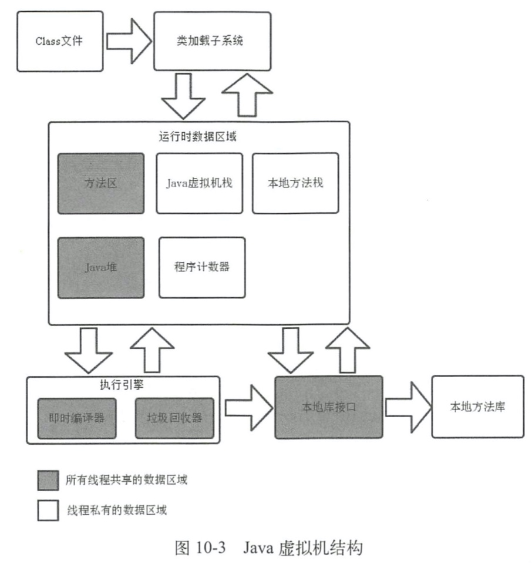
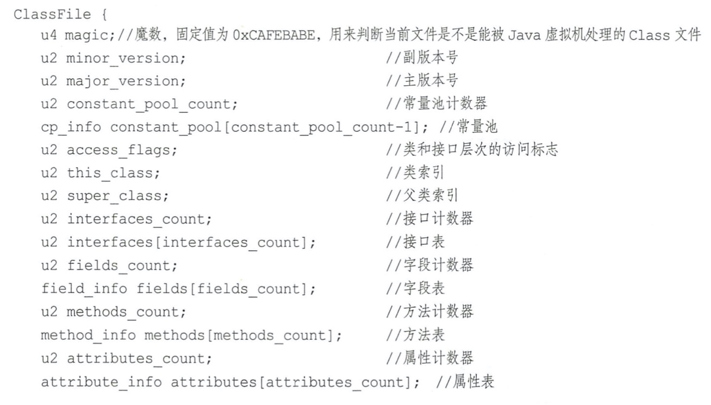
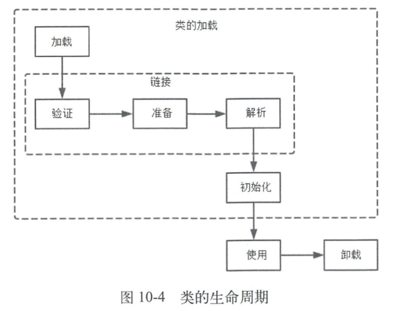
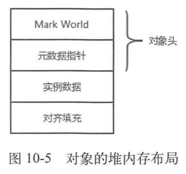
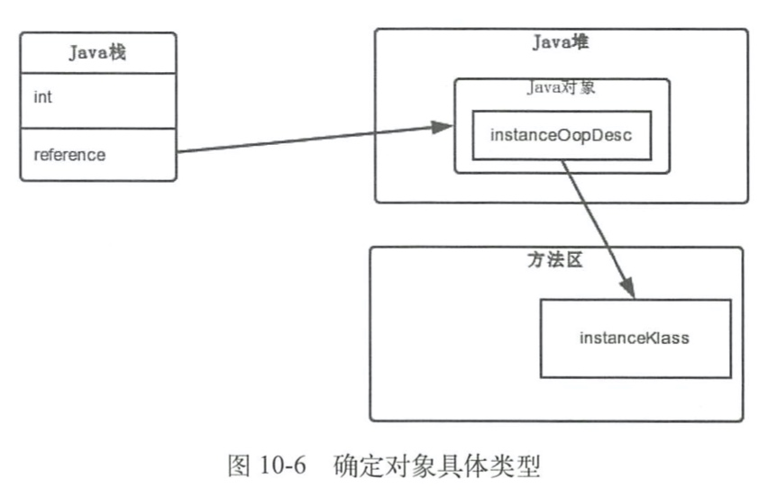
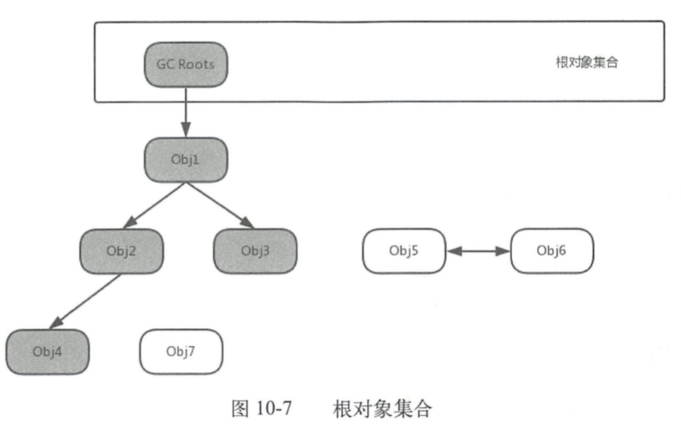
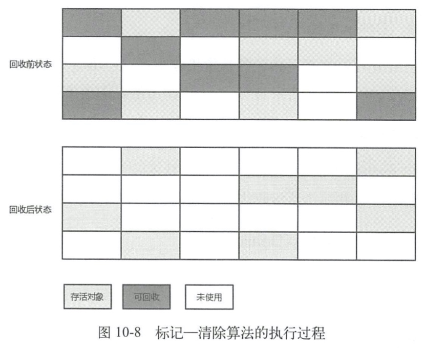
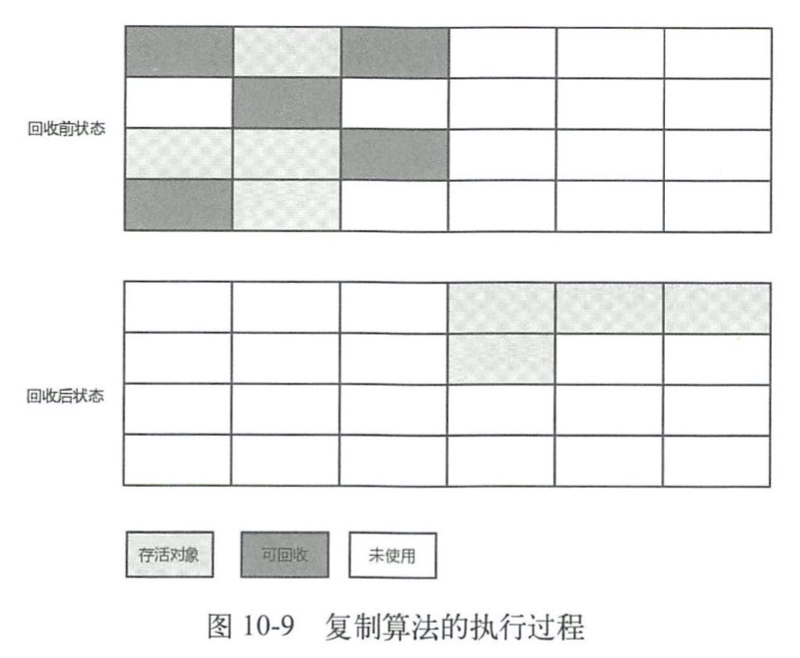
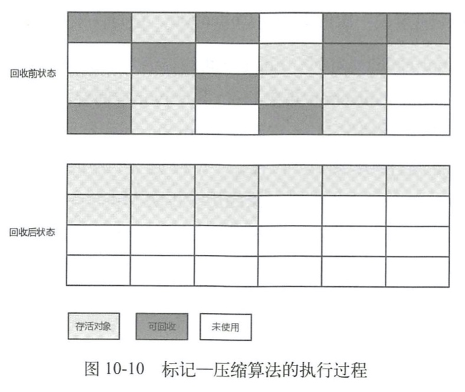

10.1 概述
10.1.1 Java虚拟机家族
- HotSpot VM
- J9 VM
- Zing VM
10.1.2 Java虚拟机执行流程


10.2 Java虚拟机结构

10.2.1 Class文件格式

10.2.2 类的生命周期
类的生命周期：
一个Java文件，从被加载到Java虚拟机内存中到从内存中卸载的过程。
- 加载：查找并加载Class文件。
- 链接
- 验证：确保被导入类型的正确性。
- 准备：为类的静态字段分配字段，并用默认值初始化这些字段。
- 解析：虚拟机将常量池内的符号引用替换为直接引用。
- 初始化：将类变量初始化为正确的初始值。
- 使用
- 卸载

10.2.3 类加载子系统
类加载子系统通过多种类加载器来查找和加载Class文件到Java虚拟机中。Java虚拟机有两种你那个类加载器：系统加载器和自定义加载器。
系统加载器：
- Bootstrap ClassLoader（引导类加载器）
- Extensions ClassLoader（拓展类加载器）
- Application ClassLoader（应用程序类加载器）
10.2.4 运行时数据区域
- 程序计数器
- Java虚拟机栈
- 本地方法栈
- Java堆
- 方法区
- 运行时常量池
- 直接内存
10.3 对象的创建
- 判断对象对应的类是否加载、链接和初始化
- 为对象分配内存
- 指针碰撞
- 空闲列表
- 处理并发安全问题
- 分配内存进行同步处理
- 本地线程分配缓冲
- 初始化分配到的内存空间
- 设置对象的对象头
- 执行init方法进行初始化
10.4 对象的堆内存布局
以HotSpot虚拟机为例，对象在堆内存的布局分为三个区域，分别是对象头（Header）、实例数据（Instance Data）、对齐填充（Padding）。

10.5 oop-klass模型
oop-klass模型模型是用来描述Java对象实例的一种模型，它分为两个部分，OOP（Ordinary Object Pointer）指普通对象指针，用来表示对象的实例信息。klass用来描述元数据。

10.6 垃圾标记算法
10.6.1 Java中的引用
- 强引用：新建对象时引用，不会回收。
- 软引用：SoftReference，内存不足时回收。
- 弱引用：WeakReference，GC时回收。
- 虚引用：PhantomReference，和对象生命周期没有关系；被回收时会收到一个系统通知。
10.6.2 引用计数算法
基本思想：背个对象都有一个引用计数器，当对象在某处类引用的时候，它的引用计数器加1，引用失效时减1。当引用计数器中的值为0，则该对象就不能被使用，变成了垃圾。
目前主流Java虚拟机并没有选择使用引用计数算法，因为它没有解决对象之间互相循环引用的问题。
10.6.3 根搜索算法
思想：选定一些对象作为GC Roots，并组成根对象集合，然后以这些GC Roots的对象作为起始点，向下搜索，如果目标对象到GC Roots是连接着的，我们则称为该对象是可达的，如果不可达则说说明目标对象是可以被回收的对象。如图：

在Java中，可以作为GC Roots的对象主要有以下几种：
- Java栈中引用的对象。
- 本地方法栈中JNI引用的对象。
- 方法区中运行时常量池引用的对象。
- 方法区中静态属性引用的对象。
- 运行中的线程。
- 由引导类加载器加载的对象。
- GC控制的对象。
10.7 Java对象在虚拟机中的生命周期
- 创建阶段（Created）
- 为对象分配存储空间
- 构造对象
- 从超类到子类对static成员进行初始化
- 递归调用超类的构造方法
- 调用子类的构造方法
- 应用阶段（In Use）
- 不可见阶段（Invisible）
- 不可达阶段（Unreachable）
- 收集阶段（Collected）
- 终结阶段（Finalized）
- 对象空间重新分配阶段（Deallocated）
10.8 垃圾收集算法
10.8.1 标记—清除算法
- 标记阶段：标记处可以回收的对象
- 清除阶段：回收被标记的对象所占的空间。

缺点：
- 标记和清除的效率不高。
- 容易产生大量不连续的内存碎片，碎片太多可能导致没有足够的连续内存分配给较大对象，从而触发新的一次垃圾收集动作。
10.8.2 复制算法
为了解决标记—清除算法效率不高的问题。
- 它把内存空间划分为两个相等的区域，每次只使用其中一个区域；
- 在垃圾收集时，遍历当前使用的区域，把存活的对象复制到另一个区域中，最后将当前使用的区域的可回收对象进行回收。

- 这种算法每次对整个半区进行内存回收，不需要考虑内存碎片问题，代价就是使用内存为原来的一般。
- 复制算法的效率与存活对象数目有很大关系，如果存活对象很少，复制算法的效率就会很高。所以复制算法广泛应用于新生代中。
10.8.3 标记-压缩算法
老年代不适用复制算法，因为老年代对象存活率高，会有很多复制操作，导致效率变低。
标记-压缩算法在标记可回收的对象后，将所有存活的对象压缩到内存的另一端，使他们紧凑地排列在一起，然后对边界以外的内存进行回收。

10.8.4 分代收集算法
对不同生命周期的对象采取不同的收集算法，这就是分代的概念。
- 新生代
- Eden空间
- From Survivor空间
- To Survivor空间
- 老年代
Eden空间中大多数对象生命周期很短，Eden空间和两个Survivor空间所占比例为8:1。
根据Java堆区的空间划分，垃圾收集的类型分为两种：
- Minor Collection：新生代垃圾收集
- Full Collection ：老年代收集。又称Major Collection。
Full Collection通常情况下伴随至少一次的Minor Collection，收集频率较低，耗时较长。